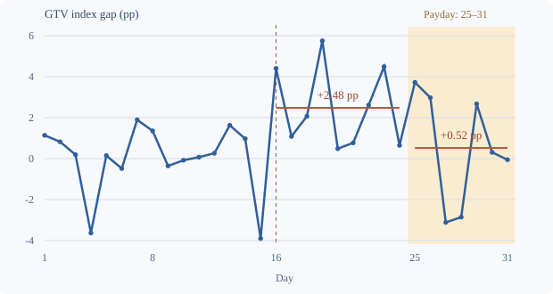

关掉广告后，+15% 的交易增长该怎么判断？
移动支付 · ANR 策略评估 Hive / SparkSQL · DID · 交易与体验的取舍
低内存手机在支付成功页加载广告时容易卡顿。团队从第 16 天起，对 1–2G 设备关闭两个广告位。这可能改善体验，也减少了广告展示；交易能承受多大影响，需要和体验收益一起判断。上线后目标设备的日均 GTV 增长 15.1%，业务很自然地会问：这笔增长能算策略成果吗？
我的判断是先把交易口径修对，再找同期变化。未改配置的高内存设备也增长了 13.5%。在比例平行趋势假设下，两次差分得到完整窗口的估计为 +1.62 个百分点；发薪前与发薪周分别为 +2.48、+0.52 个百分点。我把这个交易结果与 ANR、后续支付和广告收入放在一起，判断关广告这笔取舍是否值得。
判断过程
点开每一步，看这次选择依据与改变结论的证据。
发薪前后，这个差值分别是 +2.48 和 +0.52 pp。第 04 步展示两次差分的计算过程。
我们在用广告展示换什么？
广告出现在支付成功页，本笔支付已经发生。关掉两个高资源广告位，预期首先改变的是成功页体验；它也会减少广告展示。我的评估因此围绕三个问题展开：配置有没有生效，卡顿与后续使用有没有改善，交易和广告收入付出了多少代价。
>2G 不变
进入发薪周
第 16 天是策略开始日：1–2G 设备从这一天统一关广告，>2G 设备始终维持原配置。因此，前 15 天是干预前，后 16 天是干预后；1–2G 是处理组，>2G 是对照组。这是一次统一上线、连续多天观察的 DID，只有一个处理起点。
先定决策：交易增长只是观察到的结果；策略值不值得做，要同时看体验改善与收入代价。
同一笔支付，会不会因为少了一次点击而消失？
原取数先找有广告点击的用户，再关联他们的交易。关广告后，部分人仍在支付，却没有点击，于是被筛出了分析 cohort。我把入口改成交易记录：先保留当天有支付的用户，再关联内存档。
下面用 A、B、C 三人说明：三人干预前后都有支付，B 在关广告后不再点击。
B 被点击条件筛掉
他的交易也随之漏算
B 仍由支付记录入样
交易完整保留
两张图固定同样三位支付用户，突出筛选规则的区别；实际每天按当天交易记录入样。交易先汇总到用户 × 日，关联当天设备内存档；广告事件另行汇总，最后按内存档 × 日比较。
调整后，cohort 随真实支付行为变化，广告点击减少不再额外筛掉交易。
用未关广告的设备，估计低内存组原本会怎么变
这次统一上线，没有随机分流。我选择同期未改配置的 >2G 设备作对照：两档用户经历同一段市场环境和发薪日历，差别是 1–2G 从第 16 天起关闭了两个广告位。
干预前两档的日均 GTV 分别约为 ₦48.93B 和 ₦126.67B。我将各自的干预前均值设为 100，再比较变化率。这里选择的是比例尺度上的平行趋势：共同的市场冲击按相近比例作用于两档用户。
检查这个选择，重点是前 15 天标准化后的两档是否同向变化、差距有没有持续扩大，以及同期是否有只影响某一档的版本或营销动作。两档的收入与支付场景可能不同，所以发薪响应是这个对照最关键的业务判断，结果也按发薪前与发薪周分别呈现。
平行趋势把对照组的变化接到处理组的反事实上；在这一假设下，两组变化之差就是策略效应的估计。
两次差分，得到扣除共同变化后的策略估计
先在两档内部做前后比较，再在两档之间比较变化。以下都以第 1–15 天的日均 GTV 为基线。
对照组：100 → 113.475，增加 13.475各自从自己的基线出发，得到同一时间段内的变化。
同样的两次差分，分别应用于发薪前、发薪周和完整干预后窗口：
| 窗口 | 1–2G 增长 | >2G 增长 | 差值 |
|---|---|---|---|
| 16–24 · 发薪前 | +2.19% | −0.29% | +2.48 pp |
| 25–31 · 发薪周 | +31.69% | +31.17% | +0.52 pp |
| 16–31 · 整段 | +15.10% | +13.47% | +1.62 pp |

发薪前，处理组增长 2.19%，对照组下降 0.29%，差分结果为 +2.48 pp；发薪周，两档都增长约 31%，差分结果为 +0.52 pp。完整干预后窗口的结果为 +1.62 pp。
第一次看每一组前后变了多少，第二次扣除共同变化：从处理组的 +15.10% 增长，得到 +1.62 pp 的 DID 估计。
收回 +15% 的归功，把评估对准真正的取舍
目标档广告点击的日均量从约 898K 降到 582K，说明广告交互确实明显改变。它回答的是配置执行；这份数据还没有回答成功页 ANR 改善了多少，以及用户后来是否更愿意支付。
| 下一次要回答 | 为什么会影响决策 |
|---|---|
| 成功页 ANR 是否下降、后续支付是否改善 | 确认用广告展示换来的体验价值。 |
| 交易能承受多大损失 | 先约定可承受的损失范围，再用同期同类低内存设备分流比较。 |
| 广告收入少了多少 | 连同支付净收入，判断取舍是否划算。 |
我的交付是把“交易涨了 15%”改成一个可行动的判断：先用同期比较估计交易变化，再补成功页 ANR、后续支付和广告收入口径。若能在同类低内存设备里做分流，就不用一直借高内存用户解释发薪差异。
这次评估最有价值的地方，是决定下一次该看什么、怎么比较，而不是给一个漂亮的增长数找归因。